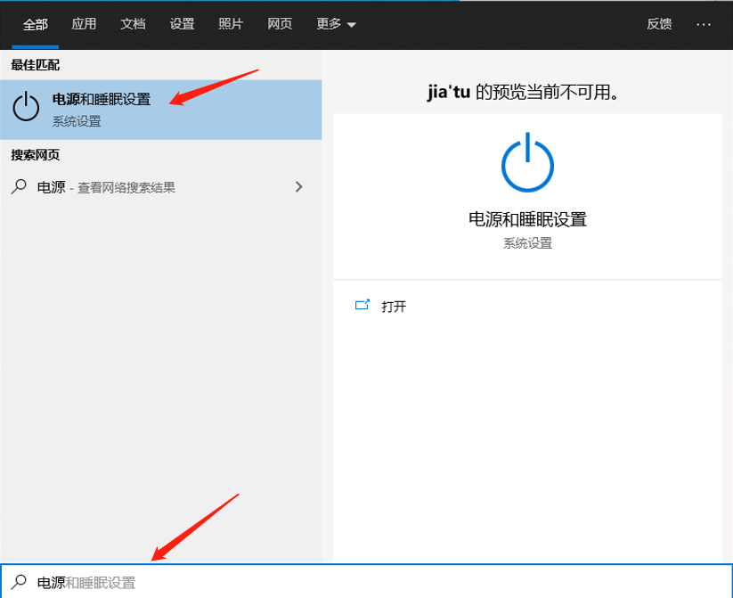

常见的操作或使用不当导致的问题包括图像采集失败、通讯失败和定位、标定失败、软件不能启动、软件崩溃等，本章就常见问题指出其可能原因并给出相应的解决方法。
| 现象 | 可能原因 | 解决方法 |
|---|---|---|
| 相机初始化失败 | 相机序列号设置错误 | 重新设置相机序列号 |
| 相机驱动安装错误 | 重新安装相机驱动程序 | |
| 相机驱动版本过低 | 安装新版本相机驱动程序 | |
| 相机连接断开 | 检查相机连接是否正常 | |
| 图像不清晰 | 相机焦距设置不准确 相机光圈设置不准确 | 调节相机焦距和光圈旋钮 |
| 现象 | 可能原因 | 解决方法 |
|---|---|---|
| 串口通讯失败 | 串口通讯线材连接有误 | 重新连接线材 |
| 串口设置不是相互连接的端口 | 将互相通讯的串口设置成相互连接的端口，如“COM1”与“COM2”。 | |
| 通讯参数设置不一致 | 将通讯参数设置成一致的，详见5.11.1串口通信工具 | |
| 网口通讯失败 | IP地址与服务端不一致 | 将IP地址与服务端设置成一致的 |
| 端口设置与服务端不一致 | 将端口设置成与服务端一致 | |
| 端口设置过小，已被占用 | 将端口设置成较大值，如“2000” | |
| 其他通讯失败原因 | 发送指令错误 | 修改指令代码 |
| 传输数据格式错误 | 修改传输数据格式 |
| 现象 | 可能原因 | 解决方法 |
|---|---|---|
| Mark点定位失败 | 特征模版建立不准确 | 重新建立搜索模版 |
| 搜索区域设置不包含特征 | 重新设置搜索区域 | |
| 光源过暗或过亮 | 调节光源亮度 | |
| Mark点定位不准确 | Mark特征不唯一 | 重新建立搜索模版 |
| 标记点设置有误 | 重新设置正确标记点 | |
| 光源过暗或过亮 | 调节光源亮度 | |
| 图像标定失败 | 靶标图像存在模糊等问题 | 重新载入正常的靶标图像 |
| 标定参数设置与靶标特征不符 | 重新设置标定参数或更换靶标图像 |
加密狗不能正常使用会导致不能打开软件。
现象：打开软件时，报错“没有插入加密狗或加密狗权限不足，点击确定退出软件。”
原因及解决方案：
(1) 没有插入加密狗：插入加密狗即可解决
(2) 加密狗权限不足：使用附录A进行权限查询，若为权限不足，使用附录B进行远程升级
(3) 未安装新版加密狗驱动：使用附录E查看驱动是否安装正常可用
现象： 软件使用过程中，突然报错如下：
原因及解决方案：
(1) 加密狗掉线：检查加密狗的连接状态或按附录E进行检测修复
(2) 加密狗某权限到期：使用附录A进行权限查询，如权限到期，按附录B进行远程升级
现象：软件打开或使用过程中，报错“剩余使用时间：X天”
原因及解决方案：软件中做了到期提醒，当剩余使用时间不足10天时，打开软件就会提醒，正常使用中不再提醒，直到到期前会再次提醒。使用附录B进行远程升级
现象：安装VA安装包时，最后会静默安装加密狗驱动，当安装加密狗驱动返回异常时，会报错中止安装过程
(1) 返回值：4
(2) 返回值：5
(3) 返回值：6：
(4) 返回值：7
(5) 返回值：8
(6) 返回值：50
(7) 返回值：55
原因及解决方案：
(1) 返回值：4，已存在加密狗驱动进程，手动终止进程或重启电脑，再重装软件！ 不明原因导致加密狗驱动安装进程未正常结束关闭，需要手动终止进程或重启电脑后，尝试重装软件！
(2) 返回值：5，加密狗驱动安装文件丢失，请确认关闭安全卫士、杀毒软件等，再重装软件！ 加密狗驱动安装文件在安装时，可能被360、腾讯电脑管家、2345等安全卫士、杀毒软件、桌面小助手一系列软件拦截，关闭此类软件后，尝试重装软件。
(3) 返回值：6，驱动安装失败，请确认关闭安全卫士、杀毒软件等，再重装软件！ 加密狗驱动安装文件在安装时，可能被360、腾讯电脑管家、2345等安全卫士、杀毒软件、桌面小助手一系列软件拦截，关闭此类软件后，尝试重装软件。
(4) 返回值：7\8\50\55，加密狗驱动或服务安装失败，请联系凌云光！ 可先按照附录E进行检测修复，修复后再次尝试重装软件；如果仍无法安装成功，联系研发。
第一步：进入VA安装路径，双击打开“加密狗查看工具.exe”（用于查看加密狗SN、固件版本、权限、到期时间、错误码等）
第二步：点击左侧功能区“硬件锁”，“本地加密锁”即显示当前连接的加密狗的SN（此SN可用于回传管理员，进行远程升级）
第三步：选择需要查看的加密狗，右侧显示详细信息
第四步：点击左侧功能区“我的软件”，查看许可授权的具体情况，如下，
第一步：按照附录A查询到加密狗SN，告知管理员
第二步：得到管理员发回的d2c升级文件，拷贝到已插入待升级加密狗的电脑上
第三步：双击d2c文件，弹出如下界面，显示“数据包升级成功！”表示升级成功，点击“关闭”即可
| 错误类 | 错误码 | 描述 | |
|---|---|---|---|
| 通用错误码 | 0x00000000 | 0 | 成功 |
| 0x00000002 | 2 | 输入参数错误 | |
| 0x00000003 | 3 | 内存空间不足 | |
| 0x00000004 | 4 | 缓冲区大小不足 | |
| 0x00000008 | 8 | 无效的句柄 | |
| 0x00000009 | 9 | 操作超时 | |
| 0x00000010 | 16 | 不支持的操作，可能是版本过低 | |
| 0x00000040 | 64 | 网络错误 | |
| 0x00000044 | 68 | 当前控制锁不支持PIN码功能，请向销售或技术服务人员申请更换控制锁 | |
| 0x00000045 | 69 | 开发锁仍然使用初始 PIN码，请修改初始 PIN 码 | |
| 0x00000047 | 71 | 开发锁或 API 版本太低，需要更换开发锁或升级 SDK | |
| 0x00000048 | 72 | 输入的 PIN 码错误 | |
| 0x00000049 | 73 | PIN 码被锁定，请联系技术服务人员解决 | |
| 精锐5 设备错误码 | 0x01000071 | 16777329 | 许可升级包损坏 |
| 0x01000072 | 16777330 | 许可升级包版本过低 | |
| API错误码 | 0x02000002 | 33554434 | IPC 收发错误 |
| 0x02000003 | 33554435 | 连接失败，指连接软件链接 Virbox 许可服务失败（本地服务） | |
| 0x05000004 | 83886084 | 找不到服务器 | |
| 0x05000006 | 83886086 | 登录的许可句柄数量已达到上线（上线为128） | |
| 0x0500000D | 83886093 | 系统操作失败 | |
| 0x05000013 | 83886099 | 白名单触发 | |
| 0x05000014 | 83886100 | 黑名单触发 | |
| 0x0500001F | 83886111 | 没有找到加密锁，请确保加密锁正常插入 | |
| 0x13000001 | 318767105 | 开发商证书已存在加密锁中。若许可可以正常下载到加密锁中，此错误可忽略 | |
| 0x13000003 | 318767107 | 解析用户锁的设备证书失败 | |
| 0x13000005 | 318767109 | 错误的数据相应 | |
| 0x13000007 | 318767111 | 未调用 Runtime 初始化函数，请先调用 slm_init 初始化函数，再调用此接口 | |
| 0x13000009 | 318767113 | Runtime 库版本不匹配，请升级 SDK 开发库 | |
| 0x13000020 | 318767136 | 许可未找到，请确保指定的许可可以被访问到（本地硬件锁许可，网络硬件锁许可，云许可，软许可） | |
| 0x13000021 | 318767137 | 认证错误。请联系 技术服务人员 解决 | |
| 0x13000022 | 318767138 | 认证错误。请联系 技术服务人员 解决 | |
| 0x13000024 | 318767140 | 用户数据区太小 | |
| 0x13000025 | 318767141 | 无效的 LM 请求 | |
| 0x13000027 | 318767143 | 错误的 D2C 升级包 | |
| 0x13000028 | 318767144 | 访问云许可或云平台时返回的数据错误 | |
| 0x13000029 | 318767145 | 读写的数据过大 | |
| 0x13000030 | 318767152 | 没有登录的用户 | |
| 0x13000037 | 318767159 | 许可模块不存在，用此错误码判断当前功能模块是否支持 | |
| 0x13000038 | 318767160 | 错误的开发商 API 密码 | |
| 0x1300003A | 318767162 | 账号登录会话时效，请重新登录用户账号 | |
| 0x13000051 | 318767185 | 许可需要联网激活 | |
| 0x24000008 | 603979784 | 发现软件被调试 | |
| 0x2400000D | 603979789 | 无效的 Session（当前许可的会话失效，可能许可登录已经退出或被强行踢出） | |
| 0x2400000E | 603979790 | Session 已被删除（当前许可的会话失效，可能许可登录已经退出或被强行踢出） | |
| 0x2400000F | 603979791 | 许可已经过期（许可在访问过程中过期） | |
| 0x24000010 | 603979792 | Session 超时（访问加密锁的会话超时了） | |
| 0x24000015 | 603979797 | 许可不允许远程登录（当前许可是本地许可，却被远程机器访问了） | |
| 硬件锁许可错误码 | 0x22000001 | 570425345 | 文件名称无效，可能指定的文件名称在锁内并不存在 |
| 0x22000006 | 570425350 | 锁内创建文件长度出错，可能是我们在锁内创建的文件太大，超出了锁内剩余空间大小 | |
| 0x22000007 | 570425351 | 锁内文件写数据出错，可能是没有写入权限 | |
| 0x22000008 | 570425352 | 许可信息数据错误。可能是许可访问数据被篡改。请联系 技术服务人员 解决 | |
| 0x22000009 | 570425353 | 许可信息数据错误。可能是许可访问数据被篡改。请联系 技术服务人员 解决 | |
| 0x2200000B | 570425355 | 在更新或删除锁内某条许可的时候，锁内并没有找到对应的许可 | |
| 0x2200000D | 570425357 | 当前许可号不能被操作，可能是操作了 0号许可 | |
| 0x2200000E | 570425358 | 所有许可被禁用（0号许可被禁用） | |
| 0x2200000F | 570425359 | 当前许可被禁用。升级了许可禁用升级包造成的，也称之为许可吊销 | |
| 0x22000011 | 570425361 | 许可尚不可用，一般是指许可没有达到可使用的时间（对于设置了起始时间的许可可能会返回此错误） | |
| 0x22000012 | 570425362 | 许可已经到期（许可已经超过设定的结束时间，或时间跨度已经用尽） | |
| 0x22000014 | 570425364 | 许可登录次数用尽 | |
| 0x22000015 | 570425365 | 许可已达到最大并发数（网络授权的并发数达到最大值，新的登录将失败） | |
| 0x22000017 | 570425367 | 锁内已经达到最大会话数量 | |
| 0x2200001A | 570425370 | 没有足够的共享内存。锁内共享内存大小为 256byte，可能是操作的数据过大 | |
| 0x2200001C | 570425372 | 错误的数据文件长度 | |
| 0x2200001E | 570425374 | 找不到对应的许可数据文件。可能是许可并没有设置数据区，但是我们却准备操作数据区 | |
| 0x2200001F | 570425375 | 远程升级包类型错误 | |
| 0x22000020 | 570425376 | 时间戳错误的远程升级包（D2C 升级包） | |
| 0x22000021 | 570425377 | 序列号错误的远程升级包（D2C 升级包） | |
| 0x22000022 | 570425378 | 添加的许可已经存在，若要覆盖已有许可，请在签发许可的时候选择“强制添加” | |
| 0x22000023 | 570425379 | 许可数量受限 | |
| 0x22000024 | 570425380 | 无效的许可数据文件偏移 | |
| 0x2200002C | 570425388 | 许可会话已退出登录 | |
| 0x22000031 | 570425393 | 设置的用户数据区类型字段错误 | |
| 0x22000032 | 570425394 | 设置的用户数据区长度过大 | |
| 0x22000034 | 570425396 | 所有许可时间到期（0号许可已经到期） | |
| 0x22000038 | 570425400 | 远程升级失败。许可升级错误，若多次尝试依旧失败，请联系 技术服务人员 解决 | |
| 0x2200003C | 570425404 | 加密数据长度不对齐 | |
| 0x2200003D | 570425405 | 加密数据错误 | |
| 0x2200003E | 570425406 | 不支持短码升级 | |
| 0x22000040 | 570425408 | 用户数据区不存在（当前许可并没有设置数据区） | |
| 0x22000050 | 570425424 | 找不到文件，可能指定的文件名称在锁内并不存在 | |
| 0x22000059 | 570425433 | 无效的开发商ID，可能是加密锁异常了，请联系 技术服务人员 解决 | |
| 0x2200005D | 570425437 | 升级包许可数量过大 | |
| 0x2200005F | 570425439 | 用户锁被锁定（您可能有些操作锁定了加密锁，无法解锁，请联系软件供应商解决） | |
| 0x22000062 | 570425442 | 无效的短码升级交互文件 | |
| 0x22000063 | 570425443 | 短码升级用户数据区错误 | |
| 0x22000064 | 570425444 | 错误的开发锁签名版本，需要更换为新的用户锁，请联系软件供应商或者 技术服务人员 解决 | |
| 0x22000065 | 570425445 | 错误的开发锁签名数据，需使用新的开发锁签包，请联系 技术服务人员 解决 |
为更方便的定位加密狗问题，需要用户找到并回传加密狗的日志，方法如下：将C:\Program Files (x86)\senseshield\ss路径下的log文件夹及install.log文件一并发回
第一步：进入VA安装路径，以管理员权限打开“加密狗修复工具.exe”
第二步：关闭杀毒软件、安全卫士等软件。点击“一键检测修复”，可有效检测如下常见问题
第三步：检测结果如下，说明没有此类问题，需要反馈给研发
运行环境不满足软件要求，会导致软件运行不稳定甚至闪退崩溃等。
以下是已知的会引起软件异常的环境设置问题：
引起的问题：当电脑自动锁屏后，再解锁屏幕时，可能会引起软件崩溃。
解决办法：
设置电脑永不锁屏，永不休眠。
设置方法：
点击桌面左下角开始，搜索“电源和睡眠设置”并打开。

进入下面界面，设置屏幕和睡眠均为“从不”
引起的问题：安装的显卡驱动版本过低，可能会引起深度学习工具闪退崩溃等。
解决办法：
升级显卡驱动版本。
设置方法：
先查看显卡驱动版本是否满足要求。查看方法：选中此电脑，选择“管理”进入到下面界面并依次点击设备管理器-显示适配器-选择NVIDIA开头的点击鼠标右键，选择属性。
进入到属性界面，点击“驱动程序”,查看驱动程序版本号：
若版本号低于软件要求的版本号，需升级显卡。
升级方法：打开NVIDIA官网（https://www.nvidia.cn/geforce/drivers/），会进入下面的页面，需要根据安装的显卡型号。设置下图框出的4个位置。
如我们安装的是Geforce GT 730的显卡，那么：
产品型号：GeForce
产品系列：GeForce 700 Series
产品：GeForce GT 730
操作系统：就是要安装显卡驱动的电脑的操作系统。
这里要注意的是，台式机和笔记本的显卡驱动的产品系列是不一样的（见上图），笔记本的显卡驱动的产品系列里会多个Notebooks说明。
设置好以后，点击开始搜索，会出现多个显卡驱动版本，并且同一版本号可能分为STUDIO和GAME两个版本，建议选择满足版本要求STUDIO版本下载安装。